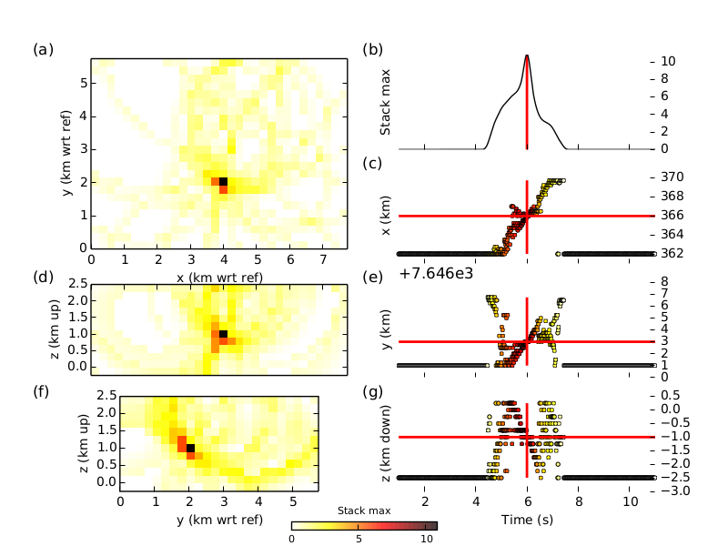
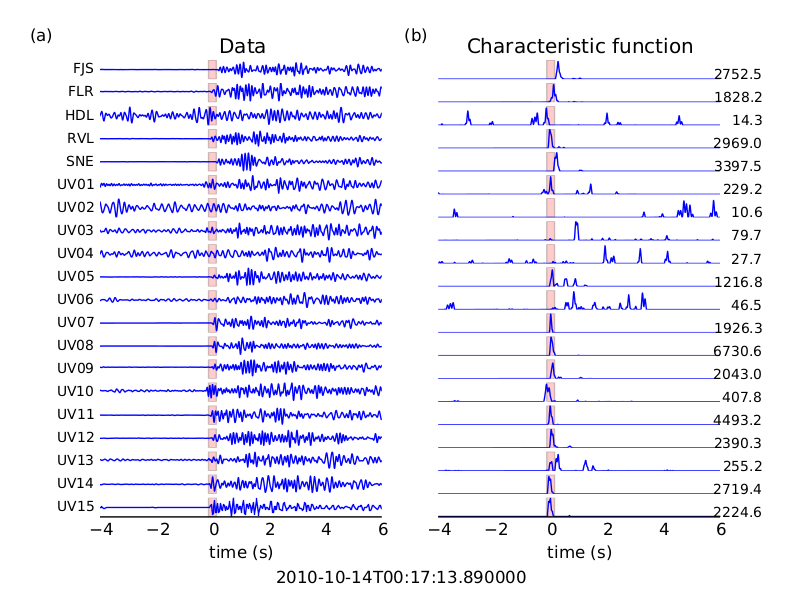
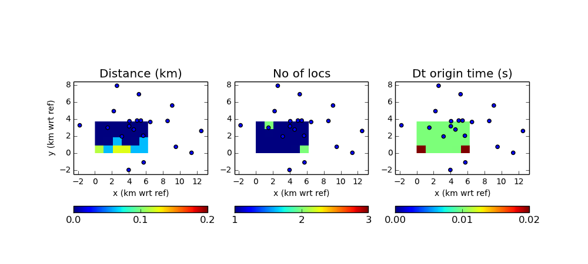

Getting Started¶
This is a quick guide for getting started with WaveLoc.
Download and installation¶
The latest stable source distributions are downloadable from AmazonAWS:
The latest development source archive is available from the WaveLoc Github pages, which is also the place you should go if you would like to contribute to the project using the Github fork and pull-request procedures.
System requirements :
- python 2.7, numpy >= 1.6.1
- HDF5 (available here: http://www.hdfgroup.org/ftp/HDF5/current/src/)
- h5py >= 2.0.0 (available here: http://code.google.com/p/h5py/)
- obspy > 0.7.1 (available here: http://obspy.org)
- NonLinLoc for time grid calculation (not strictly required, available here: http://alomax.free.fr/nlloc/)
- other stuff I’ve surelly fogotten about...
The easiest way to get all the required python modules (except for obspy) is to install a recent version of the full Enthought Python Distribution. Enthought deliver free licenses for academic use. Enthought also bundle a completely free version, but it does not have all the necessary modules (notably h5py).
If your python distribution does not include h5py and you need to compile HDF5 under macosx, make sure that it is configured 32-bit when using a 32-bit python distribution. (e.g., CC=’cc -m32’ ./configure –prefix=/usr/local/hdf5).
You should then be able to install the obspy modules by running
easy_install -U obspy
Installation¶
Untar the distribution, then install in the usual Python manner :
python setup.py install
If you want to use NonLinLoc to calculate the 3D time-grids, download it from Anthony Lomax’s website http://alomax.free.fr/nlloc/, and install it where you prefer (you just need to be able to call Vel2Grid and Grid2Time correctly).
Running the examples¶
In order to get you started running waveloc, we have prepared the following example scripts :
- a synthetic test example;
- a real migration example;
- a synthetic network response test example.
You should find the relevant scripts in the examples directory in the waveloc distribution.
For the tests, temporarily set the environment variable $WAVELOC_PATH to the directory you would like the tests to run in.
Download the test data here : test_data.tar.gz (beware : it is a 230 Mb file), and unpack the archive in the $WAVELOC_PATH directory.
Run the setup_examples.py script to set up the required directory structure for the examples:
cd examples python setup_examples.py
Running the synthetic test¶
Run the run_syn_example.py script to run the synthetic test. The first time you run the script it will take a long time, as the time grids need to be interpolated. After the run, you should the find the following figure in the directory $WAVELOC_PATH/out/EXAMPLE_Dirac/fig:
{kind=link}
You can test the effect of reducing the station coverage by uncommenting the following line in the script and re-running the test.
#uncomment remove some stations to test response for fewer stations
#wo.opdict['sta_list']="FJS,FLR,FOR,HDL,RVL,SNE,UV01,UV02,UV03,UV04,UV05,UV06,UV07,UV08,UV09,UV10,UV11,UV12,UV13,UV14,UV15"
Running the migration test¶
Run the run_waveloc_example.py script to run the synthetic test. The first time you run the script it will take a long time, as the time grids need to be interpolated. After the run, you should the find the a file named locations.dat in the following directory $WAVELOC_PATH/out/EXAMPLE_fullRes/loc. The file should contain the following lines, indicating that two events were found:
Max = 31765.70, 2010-10-14T00:15:57.470000 - 0.19 s + 0.16 s, x= 366.1429 pm 0.2412 km, y= 7650.5498 pm 0.2053 km, z= -0.6714 pm 0.5304 km
Max = 19545.76, 2010-10-14T00:17:13.890000 - 0.15 s + 0.13 s, x= 366.0179 pm 0.1627 km, y= 7650.7056 pm 0.1168 km, z= -0.8661 pm 0.4456 km
In the $WAVELOC_PATH/out/EXAMPLE_fullRes/loc you should find figures that look like:

and:
{kind=link}
Running the network response test¶
Run the run_syn_resolution_example.py script to run the network response test. Each point in the search grid is tested using a synthetic test to determine the location error. Location error is measured using three metrics: the Euclidean distance between the true location and that found by waveloc; the number of locations found by waveloc (there should be only one, but when the point tested is outside of the network more than one location may be found); the origin time shift (waveloc origin time minus true origin time).
In the $WAVELOC_PATH/out/EXAMPLE_Dirac/fig directory you should find figures that look like:
{kind=link}
where the blue dots indicate the positions of the stations. In order to reduce computation time, the example uses decimation of the full grid (and the full grid itself only contains part of the domain covered by the stations). Modify the following line to increase / decreasce the decimation:
doResolutionTest(wo,grid_info,hdf_filename,loclevel=10.0,decimation=(5,5,3))